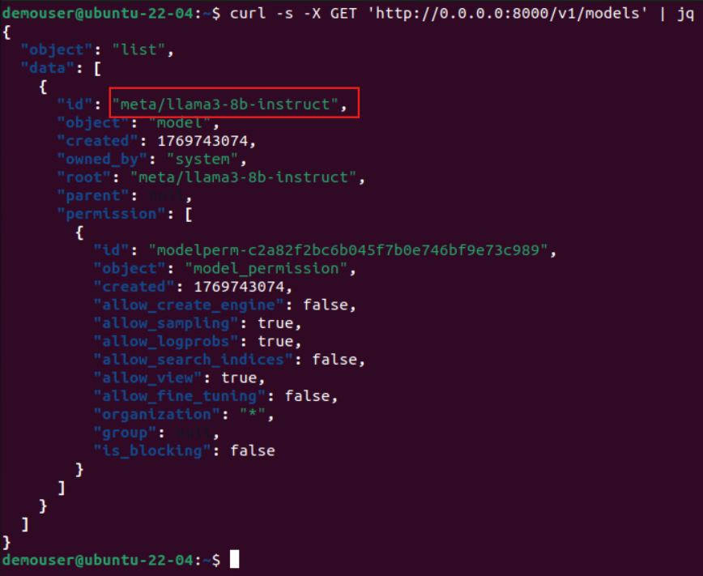
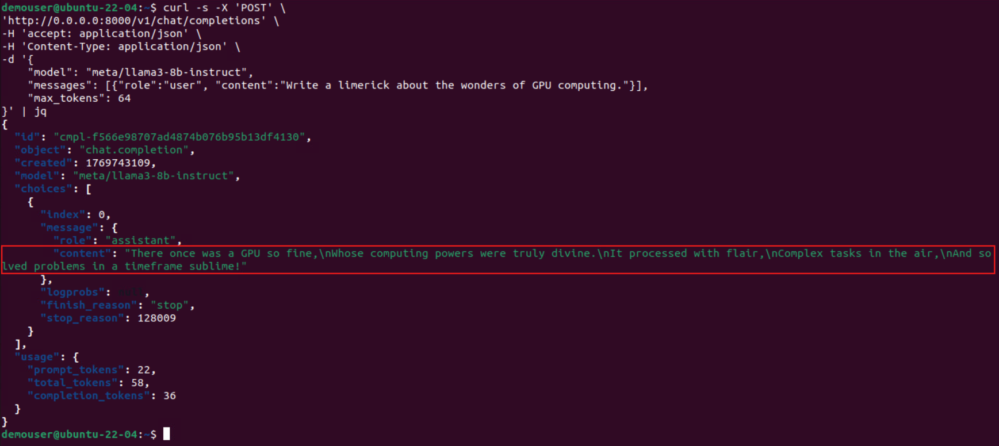
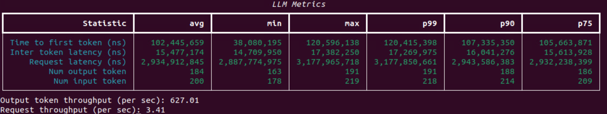

This guide will walk you through setting up a Llama 3.8B Instruct model on NIM and running a GenAI-Perf benchmark using Triton Server. You’ll learn how to configure the environment, launch the container, inference with the NVIDIA NIM container.
Before starting, ensure you have the following:
First, set up a local cache directory for NIM.
export LOCAL_NIM_CACHE=~/.cache/nim
mkdir -p "$LOCAL_NIM_CACHE"
You can list the available model profiles for the desired model using the following command.
docker run --rm --runtime=nvidia --gpus=all \
-e NGC_API_KEY=$NGC_API_KEY \
nvcr.io/nim/meta/llama3-8b-instruct:1.0.3 \
list-model-profiles
Run the Llama 3.8B Instruct model on NIM in detached mode.
docker run -itd --name=llama3-8b-instruct --rm \
--gpus all \
--shm-size=16GB \
-e NGC_API_KEY \
-v "$LOCAL_NIM_CACHE:/opt/nim/.cache" \
-u $(id -u) \
-p 8000:8000 \
nvcr.io/nim/meta/llama3-8b-instruct:1.0.3
It will take a while for the model to be deployed (around 1~5 mins). Run the following command to continuously check for GPU utilization, and you should see something like the following:
watch nvidia-smi
Press CTRL + C to go back and proceed to step 4.
To verify that the model server is running, send a GET request to list the available models.
curl -s -X GET 'http://0.0.0.0:8000/v1/models' | jq

You can now test the model by sending a POST request with a sample input.
curl -s -X 'POST' \
'http://0.0.0.0:8000/v1/chat/completions' \
-H 'accept: application/json' \
-H 'Content-Type: application/json' \
-d '{
"model": "meta/llama3-8b-instruct",
"messages": [{"role":"user", "content":"Write a limerick about the wonders of GPU computing."}],
"max_tokens": 64
}' | jq
You should see the following response, the LLM response is under the content field:

Set the tokenizer for the Llama 3.1 8B Instruct model.
export HF_TOKENIZER=~/tokenizer
Set the environment variables and run the Triton Server.
export RELEASE="24.06" # Use the latest releases in yy.mm format
export WORKDIR=~/genai-perf
mkdir -p "$WORKDIR"
docker run -it --rm --net=host --gpus=all \
-v $WORKDIR:/workdir \
-v $HF_TOKENIZER:/root/.cache/huggingface \
nvcr.io/nvidia/tritonserver:${RELEASE}-py3-sdk
Run the GenAI-Perf benchmark script on the Triton Server. Allow approximately 30 seconds for the script to complete.
export INPUT_SEQUENCE_LENGTH=200
export INPUT_SEQUENCE_STD=10
export OUTPUT_SEQUENCE_LENGTH=200
export CONCURRENCY=10
export MODEL=meta/llama3-8b-instruct
cd /workdir
genai-perf \
-m $MODEL \
--endpoint-type chat \
--service-kind openai \
--streaming \
-u localhost:8000 \
--synthetic-input-tokens-mean $INPUT_SEQUENCE_LENGTH \
--synthetic-input-tokens-stddev $INPUT_SEQUENCE_STD \
--concurrency $CONCURRENCY \
--output-tokens-mean $OUTPUT_SEQUENCE_LENGTH \
--extra-inputs max_tokens:$OUTPUT_SEQUENCE_LENGTH \
--extra-inputs min_tokens:$OUTPUT_SEQUENCE_LENGTH \
--extra-inputs ignore_eos:true \
--tokenizer meta-llama/Meta-Llama-3-8B-Instruct \
-- \
-v \
--max-threads=256
The benchmark can take up to few minutes, in which once done you will see the following reference benchmark output:

Exit out of the current trition container:
exit
Congratulations! 🎉 You successfully launched the Llama 3 8B Instruct model on NIM, tested it with sample queries, set up Triton Server, and ran a GenAI‑Perf benchmark to measure performance